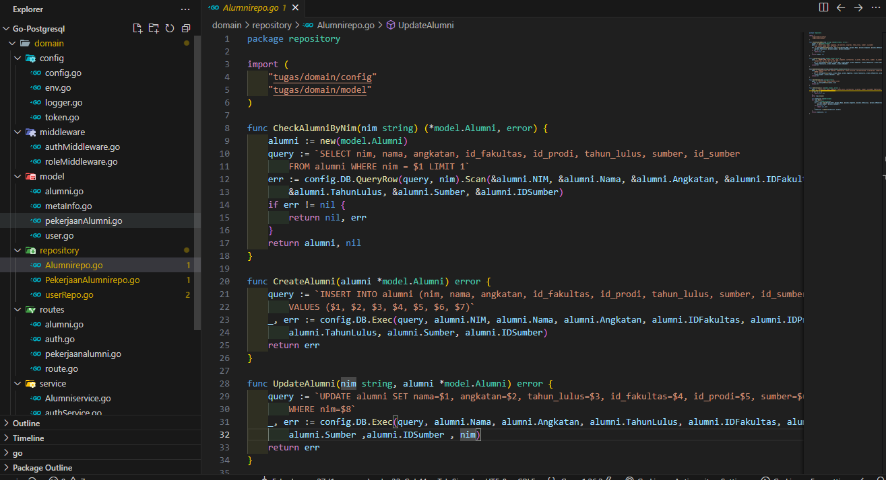

01 // Golang Ecosystem
GO CLEAN ARCHITECTURE BACKEND
Implementasi pola arsitektur domain bersih menggunakan Go-Fiber dan PostgreSQL. Pemisahan tanggung jawab pada layer handler, usecase, dan repository untuk skalabilitas backend.
Framework
Go-Fiber v2
Database
PostgreSQL / SQL